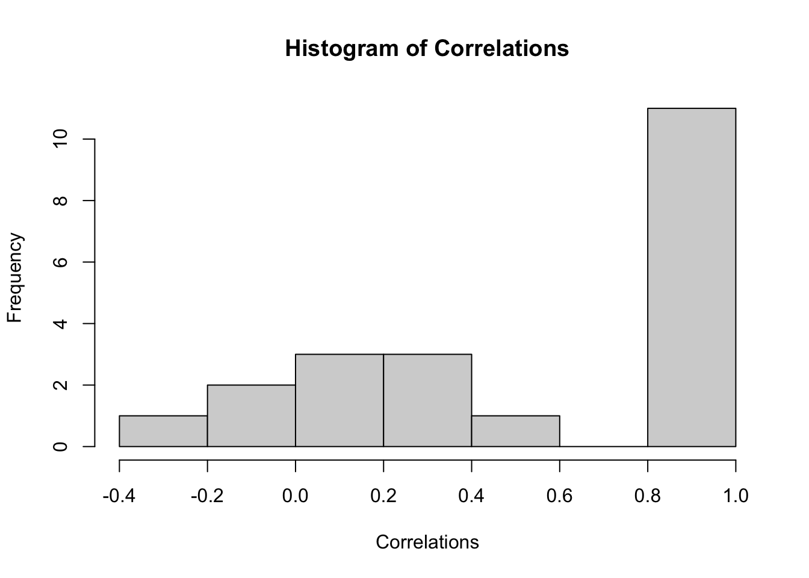
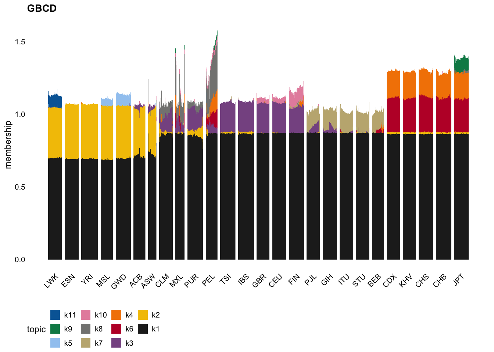
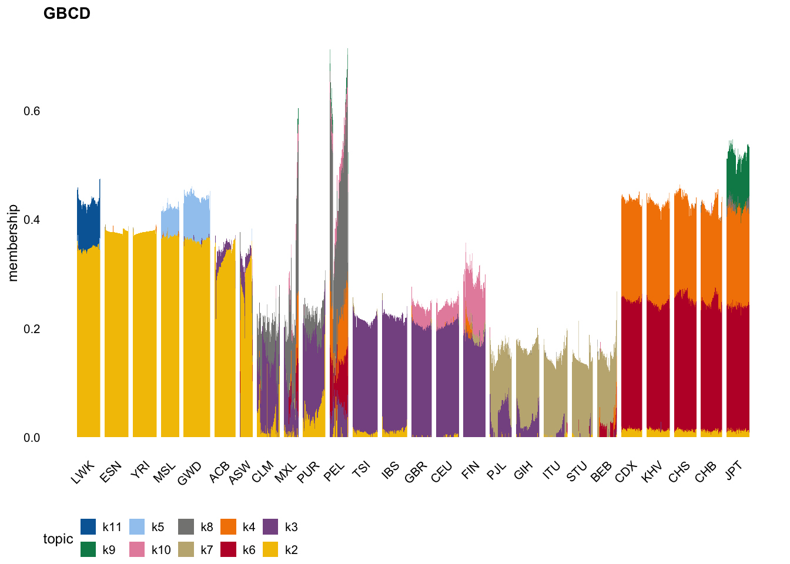

Last updated: 2025-10-22
Checks: 7 0
Knit directory: tgp_analysis/
This reproducible R Markdown analysis was created with workflowr (version 1.7.2). The Checks tab describes the reproducibility checks that were applied when the results were created. The Past versions tab lists the development history.
Great! Since the R Markdown file has been committed to the Git repository, you know the exact version of the code that produced these results.
Great job! The global environment was empty. Objects defined in the global environment can affect the analysis in your R Markdown file in unknown ways. For reproduciblity it’s best to always run the code in an empty environment.
The command set.seed(20251005) was run prior to running
the code in the R Markdown file. Setting a seed ensures that any results
that rely on randomness, e.g. subsampling or permutations, are
reproducible.
Great job! Recording the operating system, R version, and package versions is critical for reproducibility.
Nice! There were no cached chunks for this analysis, so you can be confident that you successfully produced the results during this run.
Great job! Using relative paths to the files within your workflowr project makes it easier to run your code on other machines.
Great! You are using Git for version control. Tracking code development and connecting the code version to the results is critical for reproducibility.
The results in this page were generated with repository version 7fd2f56. See the Past versions tab to see a history of the changes made to the R Markdown and HTML files.
Note that you need to be careful to ensure that all relevant files for
the analysis have been committed to Git prior to generating the results
(you can use wflow_publish or
wflow_git_commit). workflowr only checks the R Markdown
file, but you know if there are other scripts or data files that it
depends on. Below is the status of the Git repository when the results
were generated:
Ignored files:
Ignored: .DS_Store
Ignored: .Rhistory
Ignored: data/.DS_Store
Note that any generated files, e.g. HTML, png, CSS, etc., are not included in this status report because it is ok for generated content to have uncommitted changes.
These are the previous versions of the repository in which changes were
made to the R Markdown
(analysis/simplified_gbcd_with_diagonal_analysis.Rmd) and
HTML (docs/simplified_gbcd_with_diagonal_analysis.html)
files. If you’ve configured a remote Git repository (see
?wflow_git_remote), click on the hyperlinks in the table
below to view the files as they were in that past version.
| File | Version | Author | Date | Message |
|---|---|---|---|---|
| Rmd | 7fd2f56 | Annie Xie | 2025-10-22 | Add analysis of simplified gbcd with diagonal |
The aim of this vignette is to explore if the diagonal component affects the resulting decomposition found by the “simplified gbcd” procedure.
We begin by loading the necessary packages. We also set the seed so that results can be fully reproduced.
library(flashier)
library(ashr)
library(ebnm)
library(Matrix)
library(pheatmap)
library(ggplot2)
library(fastTopics)
library(cowplot)
library(dplyr)
set.seed(3)We load in the scaled Gram matrix.
S <- readRDS('data/tgp_cov_matrix.rds')We also load in the meta data which contains population information for each sample.
tgp_meta <- readRDS('data/tgp_meta.rds')Now, we use the R package flashier to apply a simplified
version of GBCD on the 1000 Genomes Project data. This is broken down
into several steps.
Step 1: Fit a point-Laplace EBMF fit to the scaled Gram matrix
cov_fit <- function(covmat, ebnm_fn = ebnm::ebnm_point_laplace, Kmax = 1000, verbose.lvl = 0, backfit = TRUE) {
fl <- flash_init(covmat, var_type = 0) %>%
flash_set_verbose(verbose.lvl) %>%
flash_greedy(ebnm_fn = ebnm_fn, Kmax = Kmax)
if (backfit == TRUE){
fl <- flash_backfit(fl)
}
s2 <- max(0, mean(diag(covmat) - diag(fitted(fl))))
s2_diff <- Inf
while(s2 > 0 && abs(s2_diff - 1) > 1e-4) {
covmat_minuss2 <- covmat - diag(rep(s2, ncol(covmat)))
fl <- fl %>%
flash_update_data(covmat_minuss2) %>%
flash_set_verbose(verbose.lvl) %>%
flash_backfit() %>%
flash_nullcheck()
old_s2 <- s2
s2 <- max(0, mean(diag(covmat) - diag(fitted(fl))))
s2_diff <- s2 / old_s2
}
return(list(fl=fl, s2 = s2))
}tgp_cov_fit <- cov_fit(covmat = S,
ebnm_fn = ebnm::ebnm_point_laplace,
Kmax = 11)Step 2: Split the factors into positive and negative components and refit the weights
split_pt_laplace_estimates <- function(cov_fit){
# S is the scaled Gram matrix
# cov_fit is a flash object
LL <- cov_fit$L_pm
FF <- cov_fit$F_pm
# split into positive and negative components
LL <- cbind(pmax(LL, 0), pmax(-LL, 0))
FF <- cbind(pmax(FF, 0), pmax(-FF, 0))
# remove columns of zeros
LL.idx.nonzero <- apply(LL, 2, function(x){return(sum(x^2))}) > 10^(-10)
FF.idx.nonzero <- apply(FF, 2, function(x){return(sum(x^2))}) > 10^(-10)
LL <- LL[, LL.idx.nonzero]
FF <- FF[, FF.idx.nonzero]
# refit weights by least squares
# n <- nrow(S)
# lft_vec <- matrix(rep(0, ncol(LL)*n*n), ncol = ncol(LL))
# for (i in 1:ncol(LL)){
# lft_vec[,i] <- c(LL[,i]%*%t(FF[,i]))
# }
#
# nnlm_fit <- NNLM::nnlm(lft_vec, as.matrix(c(S), ncol = 1), alpha = c(0,0,0))
#
# indices_keep <- (nnlm_fit$coefficients > 0)
# LL_scaled <- LL[,indices_keep] %*% diag(sqrt(nnlm_fit$coefficients[indices_keep]))
# FF_scaled <- FF[,indices_keep] %*% diag(sqrt(nnlm_fit$coefficients[indices_keep]))
return(list(LL, FF))
}pt_laplace_split_initialization <- split_pt_laplace_estimates(tgp_cov_fit$fl)Step 3: Fit a generalized-binary EBMF fit to the scaled Gram matrix
nonnegative_cov_fit <- flash_init(S) |>
flash_factors_init(pt_laplace_split_initialization, ebnm_fn = ebnm::ebnm_generalized_binary) |>
flash_backfit(maxiter = 25) |>
flash_nullcheck()Backfitting 21 factors (tolerance: 9.34e-02)...
Difference between iterations is within 1.0e+06...
--Estimate of factor 9 is numerically zero!
--Estimate of factor 10 is numerically zero!
--Estimate of factor 11 is numerically zero!
--Estimate of factor 13 is numerically zero!
--Estimate of factor 15 is numerically zero!
--Estimate of factor 16 is numerically zero!
--Estimate of factor 18 is numerically zero!
--Estimate of factor 20 is numerically zero!
--Estimate of factor 21 is numerically zero!
Difference between iterations is within 1.0e+05...
--Estimate of factor 18 is numerically zero!
--Estimate of factor 21 is numerically zero!
Difference between iterations is within 1.0e+04...
--Maximum number of iterations reached!
Wrapping up...
Done.
Nullchecking 21 factors...
Done.cov_fit_backfit <- function(covmat, init_LF_list, ebnm_fn = ebnm::ebnm_point_laplace, verbose.lvl = 2, backfit_maxiter = 200, maxiter = 100) {
fl <- flash_init(covmat, var_type = 0) |>
flash_set_verbose(verbose.lvl) |>
flash_factors_init(init_LF_list, ebnm_fn = ebnm_fn)
s2 <- max(0, mean(diag(covmat) - diag(fitted(fl))))
s2_diff <- Inf
iter <- 1
while(s2 > 0 && abs(s2_diff - 1) > 1e-4 && iter <= maxiter) {
covmat_minuss2 <- covmat - diag(rep(s2, ncol(covmat)))
fl <- fl |>
flash_update_data(covmat_minuss2) |>
flash_set_verbose(verbose.lvl) |>
flash_backfit(maxiter = backfit_maxiter) |>
flash_nullcheck()
old_s2 <- s2
s2 <- max(0, mean(diag(covmat) - diag(fitted(fl))))
s2_diff <- s2 / old_s2
iter <- iter + 1
}
return(list(fl=fl, s2 = s2))
}tgp_cov_gb_fit <- cov_fit_backfit(covmat = S, list(nonnegative_cov_fit$L_pm, nonnegative_cov_fit$F_pm),
ebnm_fn = ebnm::ebnm_generalized_binary, maxiter = 1000)Backfitting 21 factors (tolerance: 9.34e-02)...
Difference between iterations is within 1.0e+05...
Difference between iterations is within 1.0e+04...
Difference between iterations is within 1.0e+03...
Difference between iterations is within 1.0e+02...
Difference between iterations is within 1.0e+01...
Backfit complete. Objective: 31297022.375
Wrapping up...
Done.
Nullchecking 21 factors...
No factor can be removed without significantly decreasing the objective.
Done.
Backfitting 21 factors (tolerance: 9.34e-02)...
Wrapping up...
Done.
Nullchecking 21 factors...
No factor can be removed without significantly decreasing the objective.
Done.tgp_cov_fit_scaled <- ldf(tgp_cov_gb_fit$fl, 'i')Step 4: Filter factors that are not similar across both estimates
tgp_cov_fit_scaled_L <- tgp_cov_fit_scaled$L %*% diag(sqrt(tgp_cov_fit_scaled$D))
tgp_cov_fit_scaled_F <- tgp_cov_fit_scaled$F %*% diag(sqrt(tgp_cov_fit_scaled$D))# compute correlations
factor_correlations <- diag(cor(tgp_cov_fit_scaled_L, tgp_cov_fit_scaled_F))
hist(factor_correlations, main = 'Histogram of Correlations', xlab = 'Correlations')
factor_keep <- factor_correlations > 0.8tgp_cov_fit_filtered_scaled_L <- tgp_cov_fit_scaled_L[, factor_keep]A useful plot type for visualizing non-negative loadings matrices is the “structure plot” – a stacked bar plot in which each component is represented as a bar of a different color, and the bar heights are given by the loadings on each component.
This is the structure plot for the loadings estimate from gbcd:
factor_colors <- Polychrome::kelly.colors(ncol(tgp_cov_fit_filtered_scaled_L)+1)[-1]
L <- tgp_cov_fit_filtered_scaled_L
k <- ncol(L)
colnames(L) <- paste0("k",1:k)
p1 <- structure_plot(L,grouping = tgp_meta$pop,
colors = factor_colors,
gap = 16,verbose = FALSE) +
labs(y = "membership",title = "GBCD")Running tsne on 77 x 11 matrix.Running tsne on 80 x 11 matrix.Running tsne on 94 x 11 matrix.Running tsne on 70 x 11 matrix.Running tsne on 86 x 11 matrix.Running tsne on 67 x 11 matrix.Running tsne on 47 x 11 matrix.Running tsne on 77 x 11 matrix.Running tsne on 52 x 11 matrix.Running tsne on 89 x 11 matrix.Running tsne on 67 x 11 matrix.Running tsne on 86 x 11 matrix.Running tsne on 90 x 11 matrix.Running tsne on 73 x 11 matrix.Running tsne on 79 x 11 matrix.Running tsne on 86 x 11 matrix.Running tsne on 75 x 11 matrix.Running tsne on 81 x 11 matrix.Running tsne on 77 x 11 matrix.Running tsne on 75 x 11 matrix.Running tsne on 69 x 11 matrix.Running tsne on 76 x 11 matrix.Running tsne on 75 x 11 matrix.Running tsne on 81 x 11 matrix.Running tsne on 88 x 11 matrix.Running tsne on 83 x 11 matrix.Warning: `aes_string()` was deprecated in ggplot2 3.0.0.
ℹ Please use tidy evaluation idioms with `aes()`.
ℹ See also `vignette("ggplot2-in-packages")` for more information.
ℹ The deprecated feature was likely used in the fastTopics package.
Please report the issue at
<https://github.com/stephenslab/fastTopics/issues>.
This warning is displayed once every 8 hours.
Call `lifecycle::last_lifecycle_warnings()` to see where this warning was
generated.p1
Factor 1 (“k1” in the legend) appears to be a “baseline” factor. To focus on differences between samples, we can remove first factor from our structure plot:
p2 <- structure_plot(L[,-1],grouping = tgp_meta$pop,
colors = factor_colors[-1],
gap = 16,verbose = FALSE) +
labs(y = "membership",title = "GBCD")Running tsne on 82 x 10 matrix.Running tsne on 84 x 10 matrix.Running tsne on 85 x 10 matrix.Running tsne on 65 x 10 matrix.Running tsne on 94 x 10 matrix.Running tsne on 75 x 10 matrix.Running tsne on 45 x 10 matrix.Running tsne on 81 x 10 matrix.Running tsne on 51 x 10 matrix.Running tsne on 80 x 10 matrix.Running tsne on 66 x 10 matrix.Running tsne on 88 x 10 matrix.Running tsne on 90 x 10 matrix.Running tsne on 72 x 10 matrix.Running tsne on 81 x 10 matrix.Running tsne on 79 x 10 matrix.Running tsne on 77 x 10 matrix.Running tsne on 83 x 10 matrix.Running tsne on 85 x 10 matrix.Running tsne on 74 x 10 matrix.Running tsne on 70 x 10 matrix.Running tsne on 74 x 10 matrix.Running tsne on 83 x 10 matrix.Running tsne on 79 x 10 matrix.Running tsne on 76 x 10 matrix.Running tsne on 81 x 10 matrix.p2
From this plot, we can interpret the components of our decomposition. Some of the factors primarily capture super-population effects; factor 2 primarily captures the Africa super-population, factors 4 and 6 primarily capture the East Asia super-population, factor 7 primarily captures the South Asia super-population, and factor 8 primarily captures the Americas super-population. Factor 3 captures shared structure between the Europe super-population and the Americas super-population. Factor 5 captures shared structure between two African populations, Mende in Sierra Leone and Gambian in Western Division - Mandinka. Factor 10 captures shared structure between three European populations – British from England and Scotland (GBR), Northern Europeans from Utah (CEU), and Finnish in Finland (FIN).
Some of the factors capture population-specific effects. Factor 9 corresponds to Japanese in Tokyo, Japan (JPT), differentiating it from the other East Asian populations. Furthermore, factor 12 corresponds to a unique component for the Luhya people of Webuye, Kenya.
The results also highlight interesting compositions for particular populations. For example, Peruvian from Lima, Peru (PEL) contains one component, factor 8, which primarily corresponds to the Americas super-population. However, it also contains other components, factors 4 and 6, which are shared with South Asian and/or East Asian populations. Furthermore, it contains a component, factor 3, that is shared with Europe and other populations in the Americas super-population.
sessionInfo()R version 4.5.1 (2025-06-13)
Platform: aarch64-apple-darwin20
Running under: macOS Sequoia 15.6
Matrix products: default
BLAS: /Library/Frameworks/R.framework/Versions/4.5-arm64/Resources/lib/libRblas.0.dylib
LAPACK: /Library/Frameworks/R.framework/Versions/4.5-arm64/Resources/lib/libRlapack.dylib; LAPACK version 3.12.1
locale:
[1] en_US.UTF-8/en_US.UTF-8/en_US.UTF-8/C/en_US.UTF-8/en_US.UTF-8
time zone: America/Chicago
tzcode source: internal
attached base packages:
[1] stats graphics grDevices utils datasets methods base
other attached packages:
[1] dplyr_1.1.4 cowplot_1.2.0 fastTopics_0.7-30 ggplot2_4.0.0
[5] pheatmap_1.0.13 Matrix_1.7-4 ashr_2.2-67 flashier_1.0.56
[9] ebnm_1.1-38 workflowr_1.7.2
loaded via a namespace (and not attached):
[1] tidyselect_1.2.1 viridisLite_0.4.2 farver_2.1.2
[4] S7_0.2.0 fastmap_1.2.0 lazyeval_0.2.2
[7] promises_1.3.3 digest_0.6.37 lifecycle_1.0.4
[10] processx_3.8.6 invgamma_1.2 magrittr_2.0.4
[13] compiler_4.5.1 rlang_1.1.6 sass_0.4.10
[16] progress_1.2.3 tools_4.5.1 yaml_2.3.10
[19] data.table_1.17.8 knitr_1.50 labeling_0.4.3
[22] prettyunits_1.2.0 htmlwidgets_1.6.4 scatterplot3d_0.3-44
[25] plyr_1.8.9 RColorBrewer_1.1-3 Rtsne_0.17
[28] withr_3.0.2 purrr_1.1.0 grid_4.5.1
[31] git2r_0.36.2 colorspace_2.1-2 scales_1.4.0
[34] gtools_3.9.5 cli_3.6.5 rmarkdown_2.30
[37] crayon_1.5.3 generics_0.1.4 RcppParallel_5.1.11-1
[40] rstudioapi_0.17.1 httr_1.4.7 reshape2_1.4.4
[43] pbapply_1.7-4 cachem_1.1.0 stringr_1.5.2
[46] splines_4.5.1 parallel_4.5.1 softImpute_1.4-3
[49] vctrs_0.6.5 jsonlite_2.0.0 callr_3.7.6
[52] hms_1.1.4 mixsqp_0.3-54 ggrepel_0.9.6
[55] irlba_2.3.5.1 horseshoe_0.2.0 trust_0.1-8
[58] plotly_4.11.0 jquerylib_0.1.4 tidyr_1.3.1
[61] glue_1.8.0 ps_1.9.1 uwot_0.2.3
[64] stringi_1.8.7 Polychrome_1.5.4 gtable_0.3.6
[67] later_1.4.4 quadprog_1.5-8 tibble_3.3.0
[70] pillar_1.11.1 htmltools_0.5.8.1 truncnorm_1.0-9
[73] R6_2.6.1 rprojroot_2.1.1 evaluate_1.0.5
[76] lattice_0.22-7 RhpcBLASctl_0.23-42 SQUAREM_2021.1
[79] httpuv_1.6.16 bslib_0.9.0 Rcpp_1.1.0
[82] deconvolveR_1.2-1 whisker_0.4.1 xfun_0.53
[85] fs_1.6.6 getPass_0.2-4 pkgconfig_2.0.3